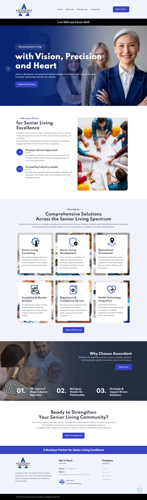
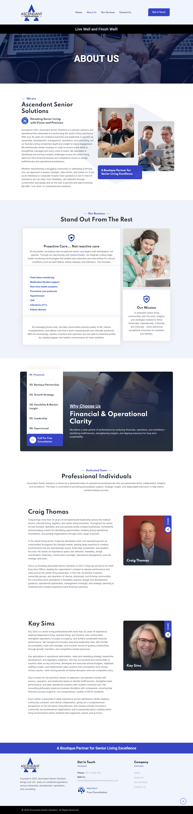
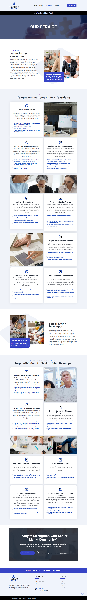
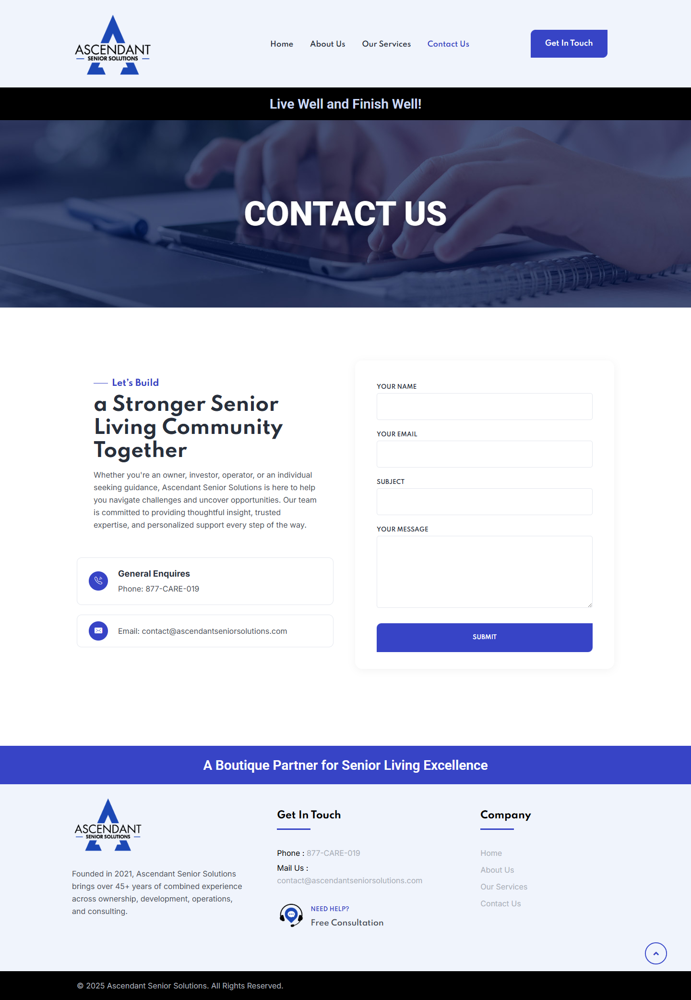
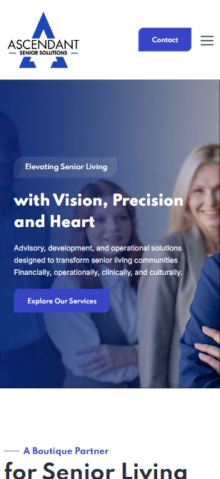

04 — Case Study
Ascendant
Corporate Website Design & Development
Designed and developed a professional corporate website for Ascendant Senior Solutions, creating a clear digital presence for its senior living consulting and professional services.

Overview
Corporate Website Design & Development
Ascendant Senior Solutions is positioned as a boutique partner for senior living excellence, providing consulting and professional services for the senior living industry. The project focused on designing and developing a clear, content-focused corporate website that presents the company's services, experience, and contact information.
Project Facts
- Industry: Senior Living Consulting
- Project Type: Corporate Website
- Focus: Senior Living Consulting & Professional Services
- Website: Responsive Corporate Website
Responsibilities
- Website Design & Content Structure
- Responsive Design
- Website Implementation & Testing
Tools Used
- Web: Website Design & Responsive Layouts
- Development: Website Implementation & Testing
Deliverables
- Corporate Website
- Responsive Desktop & Mobile Layouts
- Content-focused Page Structure
Workflow
Project Brief &
Website Planning
Defined the project scope, reviewed the content requirements, and planned the structure for the corporate website.
Website Structure &
Visual Design
Organized the content and designed structured layouts for the website's key pages and user journeys.
Responsive Design
& Testing
Adapted the layouts across desktop and mobile screen sizes while maintaining a clear content hierarchy.
Final Delivery
Reviewed the final pages, visual consistency, responsive behavior, and overall presentation before delivery.
Selected Work
A visual breakdown of selected website pages developed for Ascendant Senior Solutions.
Homepage
The homepage introduces Ascendant's senior living consulting services and establishes a clear value proposition through a strong hero section, service overview, credibility points, and calls to action.

About
The About page introduces Ascendant's positioning, experience, and professional team while reinforcing the company's focus on senior living solutions.

Services
The Services page organizes Ascendant's senior living consulting offerings into structured categories, making a broad range of professional services easier to scan and understand.

Contact
The Contact page provides a straightforward path for prospective clients to connect through essential business information and a focused contact form.

Responsive Design
The website was designed to maintain a consistent visual hierarchy and clear content structure across desktop and mobile screen sizes.
Desktop View

Mobile ViewLive Website
View the live website to explore the final implementation.